Geslaagden & reviews
De muur van geslaagden
Elke foto is iemand die zenuwachtig instapte en met een rijbewijs uitstapte.
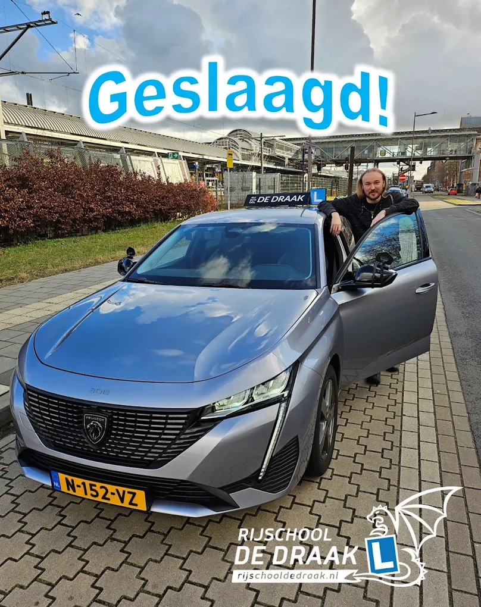
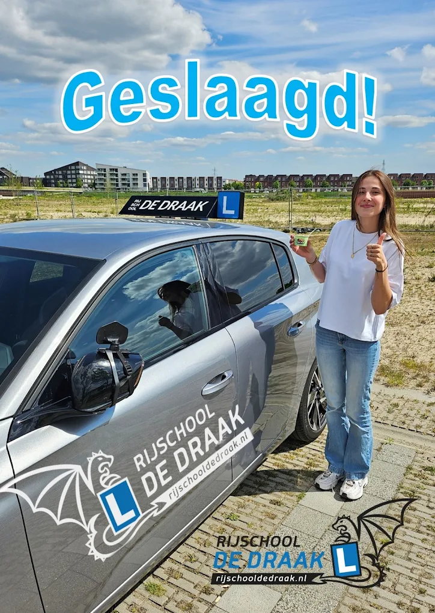

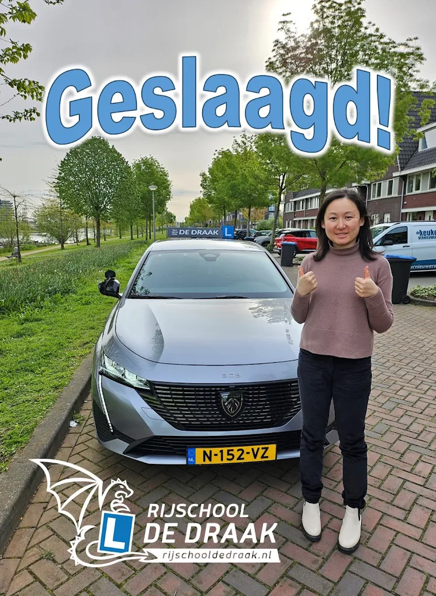
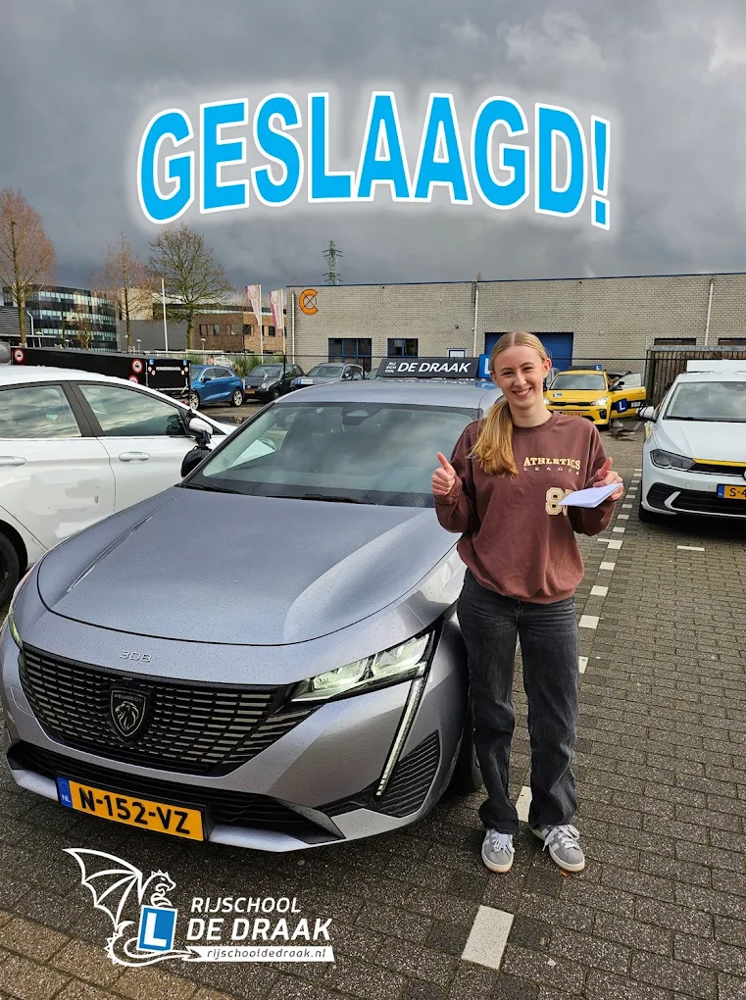

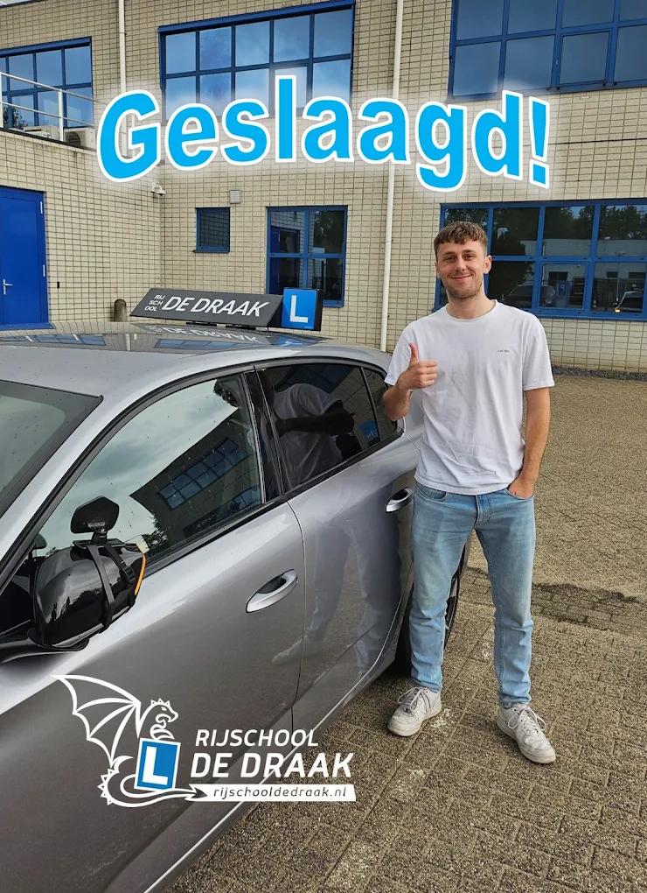

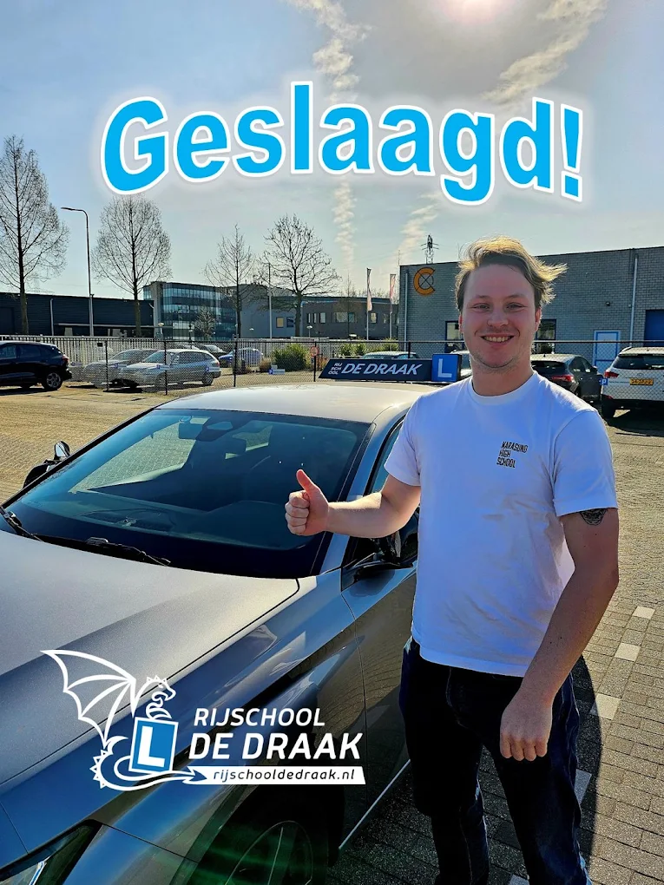
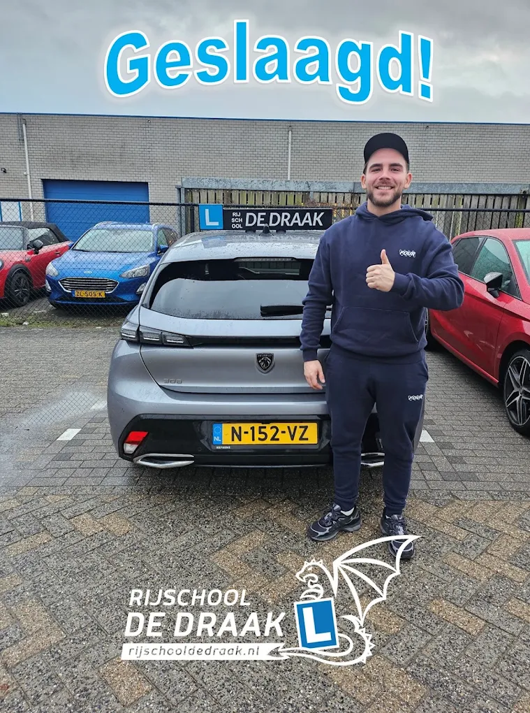

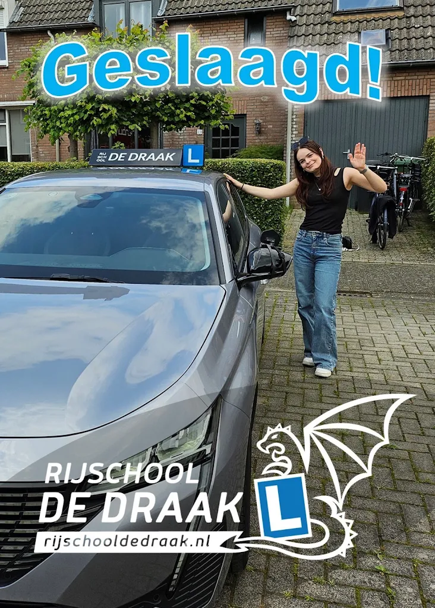
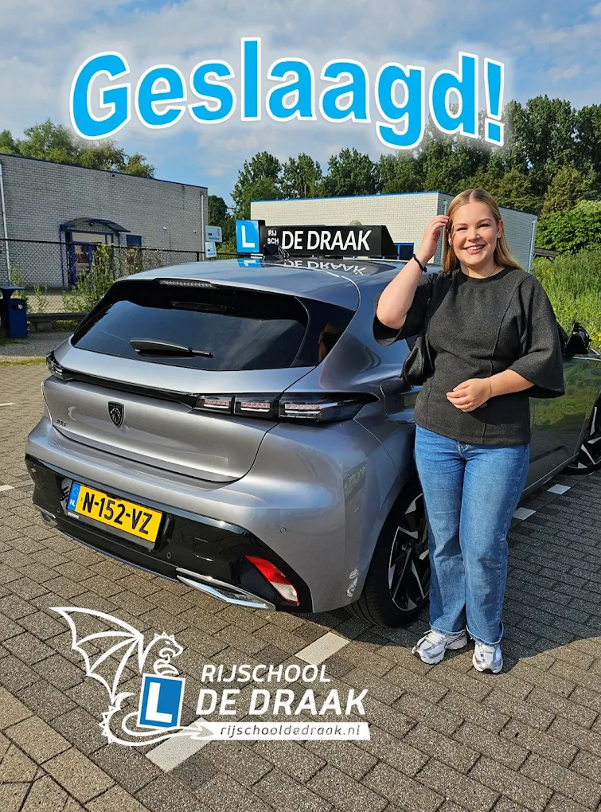

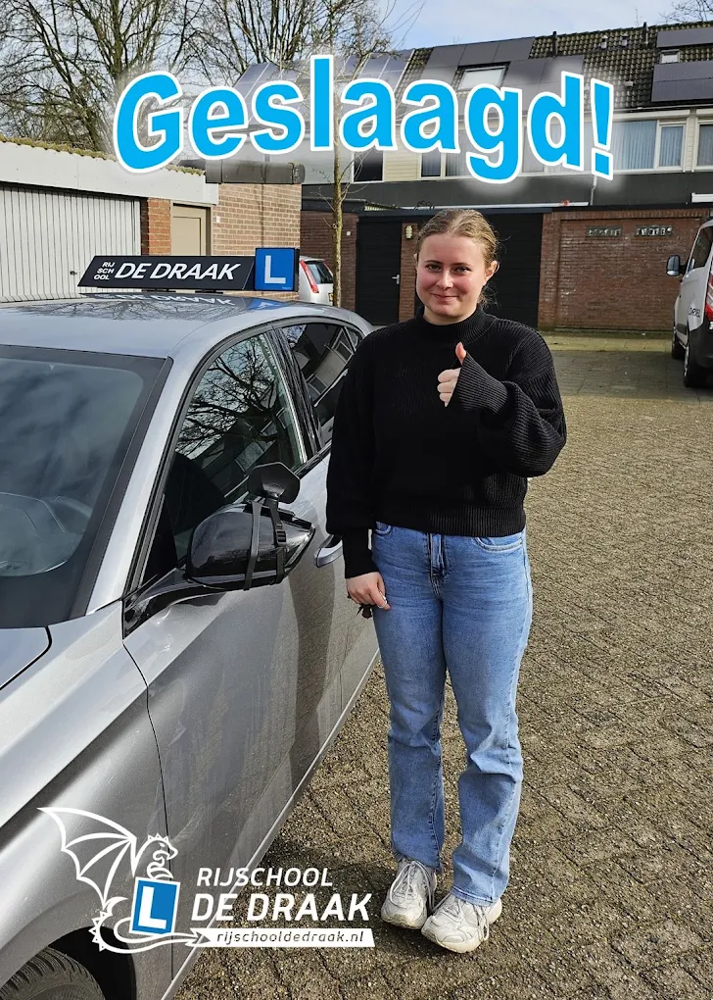

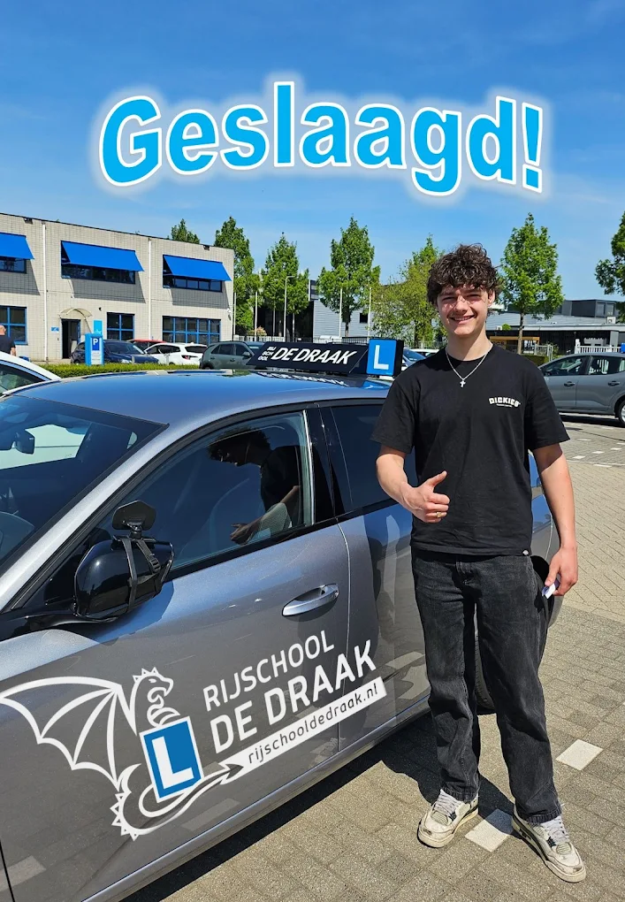


Alle reviews
21 verhalen, één rode draad
Geduld, humor en duidelijke uitleg: lees maar hoe vaak die drie terugkomen. Gemiddelde score op clickdrive.nl: 5,0 uit 9 reviews; hieronder lees je ook de reviews die leerlingen rechtstreeks achterlieten.
Rijlessen bij William waren super fijn! Hij is erg geduldig en neemt de tijd wanneer je ergens vastloopt. Daarnaast was er ook zeker sprake van humor, wat de lessen erg comfortabel heeft gemaakt. Door zijn geduldigheid, goede uitleg en rustige werkwijze ben ik in één keer geslaagd! Zeker een aanrader als je wilt beginnen.
Enorm goede ervaring gehad met instructeur William. Ik kwam voor mijn AVD-examen en vanaf les één kreeg ik gecontroleerde en duidelijke lessen. Fijne maar duidelijke begeleiding en een goede lesopbouw die resulteerde in een geslaagd examen!
Erg fijne rijschool! William heeft me stap voor stap begeleid en legde de focus op dingen waar ik moeite mee had. Dankzij zijn geduld en duidelijke uitleg werd ik steeds zelfverzekerder achter het stuur. Echt een aanrader!
Echt een super fijne rijschool, zeker een aanrader. Ik kreeg altijd goede tips en feedback van William en hij maakte er een gezellige rit van. Als het even wat minder ging zorgde hij voor motivatie en het was prettig dat hij ook de goede dingen benoemde en niet alleen de verbeterpunten. Hij was flexibel met lessen inplannen en heeft mij erg goed voorbereid op het examen.
Op 56-jarige leeftijd toch maar eens aan een rijbewijs begonnen, maar dan wel voor de motor. William neemt de tijd, legt uit en daagt je uit om elke les een stapje meer te doen. Net zolang tot je met vertrouwen de weg op gaat. Het resultaat: in één keer geslaagd voor AVB en AVD. Dankjewel voor de leuke lessen William.
Ik heb een zeer positieve ervaring met deze rijschool. Ik had best veel moeite met vooruitkijken, maar William hielp mij hier goed bij. Hij dacht met mij mee en ging daarin een stap verder dan bij een andere rijschool.
William is een zeer goede rijinstructeur. Hij is professioneel, deskundig en ervaren. Hij geeft zeer duidelijke instructies en uitleg. Dankzij zijn hulp kon ik mijn rijexamen zonder problemen halen. Ook waardeer ik zijn humor en kalmte, waardoor de stress tijdens het leren minder werd. Ik raad iedereen aan om rijlessen bij hem te volgen.
William is een super fijne rijinstructeur! Hij is geduldig, heeft humor en zorgt ervoor dat je je meteen op je gemak voelt. Ik heb met veel plezier bij hem gelest en dankzij zijn duidelijke uitleg en ontspannen aanpak ben ik in één keer geslaagd. Een aanrader voor iedereen die op een leuke manier zijn rijbewijs wil halen!
Vandaag in één keer geslaagd voor mijn praktijkexamen. William is een erg goede en ervaren instructeur; hij geeft rustig en duidelijk les en de inhoud van de lessen is logisch gestructureerd. Daarnaast is hij flexibel en heeft hij een goed gevoel voor humor. Ik zou William aan iedereen aanraden!
Afgelopen week heb ik in één keer mijn rijbewijs gehaald. Ik ben enorm positief over mijn rijlessen en over William. Hij geeft heel rustig les en past zich aan aan ieder individu. De gesprekken en grappen maken het luchtig waardoor de spanning snel verdwijnt. Hij heeft veel ervaring en kennis waardoor je goed voorbereid bent. Ik zou hem aan iedereen aanraden!
Met dank aan William en zijn fijne lessen heb ik mijn rijbewijs gehaald. Zijn lesmethode werkte voor mij persoonlijk heel goed. Met humor, inlevingsvermogen, vriendelijkheid en op de juiste momenten duidelijk zijn. Als iets spannend of moeilijk was wist William mij er doorheen te coachen zodat ik met een veilig en goed gevoel kon doorrijden. Een rijinstructeur die vertrouwen heeft in jouw eigen kunnen!
Vandaag in één keer geslaagd voor mijn praktijkexamen. Enorm blij met de lessen. William stoomt je echt klaar voor het examen waardoor je er vol zelfvertrouwen naartoe gaat!
Afgelopen week mijn rijbewijs gehaald bij deze rijschool. Erg lieve instructeur met veel humor en geduld. Zorgt ervoor dat je je op je gemak voelt in de auto en neemt de tijd om je goed voor te bereiden op je examen.
Ik heb de lessen als zeer prettig ervaren. Je krijgt de tijd om te leren en daardoor verloopt alles erg fijn en kalm. De manier van lesgeven zorgt ervoor dat je met vertrouwen richting je examen gaat.
Vandaag geslaagd voor mijn praktijkexamen. Wat een top rijschool, leuke en effectieve lessen! De instructeur is spontaan en werkt met persoonlijke aandacht. Zeker een aanrader!
William is een hele fijne instructeur en luistert veel naar wat jij zelf wil. William bedankt voor het helpen met mijn rijbewijs!
Vandaag geslaagd voor mijn rijbewijs. Dit komt door de lessen van William. Echt een instructeur die goed de balans tussen humor en een serieuze les weet te vinden. Erg prettige rijschool! Een aanrader.
Top lessen; met gevoel voor humor en gerichte focus op datgene wat nodig is. Zonder onnodige lessen mijn examen gehaald. Dank William!
Super fijne rijinstructeur! In één keer geslaagd. Super bedankt voor de fijne rijlessen William!
Super fijne en gezellige lessen gehad! In één keer geslaagd door de goede instructies en lesmethode van William. Dankjewel!
In één keer geslaagd voor mijn rijbewijs door op een prettige maar doelgerichte manier te werk te gaan. Bedankt William!